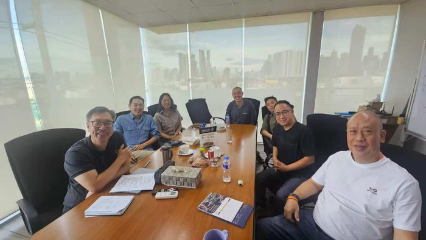
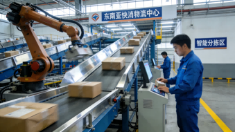
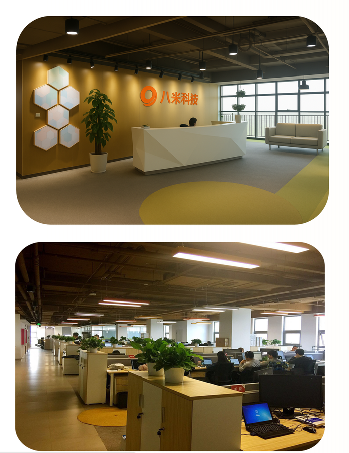

【2026年3月1日】中国领先的供应链数字化解决方案商八米科技（WWW.BAMITMS.COM）与菲律宾最大零售行业IT服务商APOLLOTECH SOFTWARE CORPORATION（以下简称"ASC"）正式签署长期战略合作伙伴协议。双方将以东南亚快消零售行业数字化转型需求为核心，联合打造并落地适配区域市场的统仓共配4PL解决方案，依托"中国供应链技术实力+东南亚本土落地能力"的双重优势，共同挖掘区域零售供应链升级的巨大潜力，推动东南亚快消零售产业向集约化、数字化、智能化转型。
时代机遇：东南亚快消零售供应链迎来升级窗口期
作为全球经济增长的重要引擎，东南亚地区凭借年轻的人口结构、持续提升的居民可支配收入、快速普及的数字基础设施，成为全球快消零售行业的"新蓝海"。据东南亚零售与物流行业权威报告显示，2025年东南亚快消品市场规模已突破8000亿美元，年复合增长率维持在8%-10%，其中便利店、社区商超、线上快消电商等业态增速尤为显著，7-11、全家等国际连锁品牌及本土头部零售企业持续加速网点布局，推动区域零售市场向规模化、精细化发展。

然而，快速扩张背后，东南亚快消零售行业正面临供应链体系不完善的核心痛点：多数零售企业采用"分散仓储、独立配送"模式，导致库存周转效率低、仓储与物流成本高企；区域物流网络碎片化，干线运输与末端履约衔接不畅，订单交付时效难以保障；数字化赋能不足，供应链全链路可视化程度低，需求预测、库存调度的智能化水平难以匹配市场快速变化的需求。在此背景下，能够整合仓储、运输、配送、信息管理等全链路服务的4PL（第四方物流）解决方案，成为东南亚零售企业突破发展瓶颈、实现降本增效的关键路径，市场需求呈爆发式增长。
强强联合：技术与本土能力的双向赋能
本次合作的核心亮点，在于双方精准的优势互补与深度的资源融合，形成"技术输出+本土落地"的闭环服务能力，打破中国供应链技术出海"落地难、适配性弱"的行业困境。

作为中国供应链数字化解决方案领域的领军企业，八米科技（WWW.BAMITMS.COM）深耕行业多年，凭借自主研发的仓储管理系统（WMS）、运输管理系统（TMS）、4PL供应链协同平台，已形成覆盖"仓储规划-库存管理-智能调度-末端履约"的全链路数字化解决方案。依托丰富的国内快消零售、电商行业落地经验，八米科技的统仓共配模式能够实现多品牌、多渠道的库存共享、集中仓储、智能分拨，有效降低企业仓储成本30%以上，提升订单履约时效25%以上，其技术实力与落地能力已获得国内众多头部快消品牌与零售企业的认可。

而APOLLOTECH SOFTWARE CORPORATION作为菲律宾乃至东南亚零售行业IT服务的标杆企业，深耕区域市场近30年，拥有深厚的行业积淀与完善的本土服务体系。作为全球顶级零售商7-11在东南亚地区的核心IT服务商，ASC不仅熟悉区域零售行业的运营规则、消费习惯与合规要求，更拥有覆盖菲律宾及东南亚主要国家的客户网络、本地化技术交付团队与售后支持体系，能够为解决方案的快速落地、场景适配与持续优化提供强有力的保障。
深度布局：共筑东南亚快消零售4PL服务生态
根据战略合作协议，双方将围绕东南亚快消零售领域，开展全方位、长期化的深度合作，重点推进三大核心工作，构建完善的4PL服务生态：
一是联合打造本地化4PL统仓共配解决方案
依托八米科技成熟的供应链数字化技术，结合ASC对东南亚零售场景的深刻理解，联合研发适配区域市场的统仓共配4PL解决方案。方案将实现"三大核心能力"：其一，库存集约化管理，支持多品牌、多渠道共享仓储资源，实现库存实时同步与动态调配，减少库存积压；其二，智能调度与履约，通过AI算法优化干线运输路径与末端配送方案，提升物流效率，降低运输成本；其三，全链路可视化，实现从订单下达、库存出库、运输跟踪到末端交付的全流程数字化管控，提升供应链透明度与管理效率。同时，方案将适配东南亚多语言、多币种、多合规要求的特点，确保在不同国家与地区的顺利落地。
二是推进解决方案规模化落地与市场拓展
以菲律宾为起点，逐步辐射马来西亚、印度尼西亚、泰国等东南亚核心市场。依托ASC的本土客户资源，优先推动方案在7-11等连锁便利店、本土大型商超及快消品牌分销商中的落地应用，打造标杆案例；同时，双方将联合组建市场拓展团队，针对区域内不同规模的零售企业，提供定制化的4PL解决方案与服务，满足不同客户的差异化需求。
三是共建长期研发与生态合作机制
双方将建立常态化联合研发团队，持续跟踪东南亚快消零售行业的发展趋势与客户需求，不断迭代解决方案的功能与服务，重点推进AI需求预测、智能分仓、绿色物流等创新能力的研发与落地；同时，双方将整合各自的资源，与区域内的仓储运营商、物流服务商、快消品牌商建立深度合作，构建"技术+服务+生态"的东南亚快消零售供应链数字化服务体系，推动行业整体升级。
双方寄语：共启东南亚零售供应链数字化新未来
八米科技创始人兼CEO表示："东南亚快消零售市场的增长潜力巨大，供应链数字化升级是行业发展的必然趋势。八米科技始终致力于以技术创新赋能供应链效率提升，此次与ASC的深度合作，是我们布局东南亚市场的重要一步。我们将充分发挥自身的技术优势，结合ASC的本土落地能力，把中国成熟的供应链数字化经验与解决方案带到东南亚，为区域零售企业提供更高效、更具性价比的4PL服务，助力区域快消零售产业实现高质量发展，同时也推动中国供应链技术与服务的全球化布局。"
APOLLOTECH SOFTWARE CORPORATION董事长表示："作为东南亚零售IT服务领域的深耕者，我们始终致力于为区域零售企业提供最优质的数字化解决方案与服务。八米科技在供应链数字化领域的技术实力与落地经验，与我们的本土优势形成了完美的互补。此次战略合作，将为东南亚零售企业带来一站式的供应链升级方案，有效解决行业痛点，提升区域零售供应链的全球竞争力。我们期待与八米科技携手，共同挖掘东南亚市场的巨大潜力，共筑区域零售供应链数字化新生态。"
未来展望：赋能区域产业升级，打造全球化合作标杆
随着东南亚快消零售市场的持续扩张与数字化转型的不断深入，4PL供应链服务将成为行业发展的核心驱动力。八米科技与ASC的战略合作，不仅是中国供应链技术"出海"的一次重要实践，更是中外企业优势互补、协同发展的典范。
未来，双方将以此次合作为起点，持续深化合作内容，拓展合作领域，逐步将统仓共配4PL解决方案推广至东南亚更多国家与地区，打造区域内领先的供应链数字化服务品牌；同时，双方将不断推动技术创新与服务升级，助力东南亚快消零售企业降本增效、提升核心竞争力，推动区域供应链体系向集约化、数字化、智能化转型，为东南亚经济的持续增长注入新的动力。
← 返回新闻列表